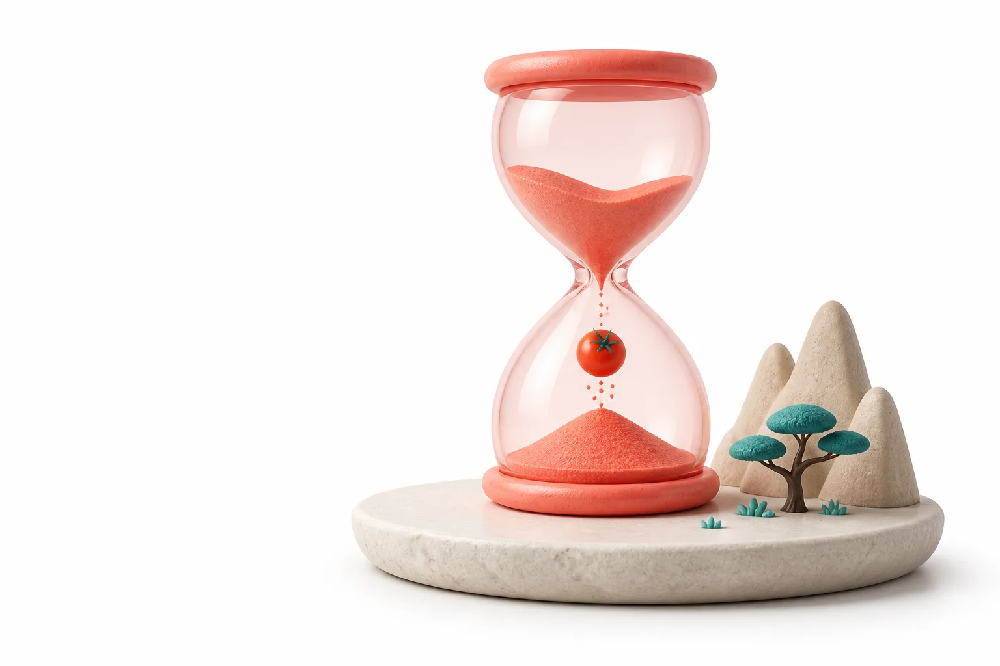

Tareas claras
Lo que toca ahora, en un solo lugar.
Un temporizador de enfoque tranquilo para tu escritorio.
Descargar para macOSDisponible próximamente.

Organiza una tarea, elige tus tiempos y empieza. Mombodoro se queda cerca sin llenar tu escritorio de ruido.
Lo que toca ahora, en un solo lugar.
Ajusta el enfoque y los descansos a tu ritmo.
Te acompañan sin interrumpir.
Es una aplicación de escritorio para organizar sesiones de enfoque y descanso con un temporizador configurable.
Sí. Puedes ajustar la duración del enfoque, los descansos y la cantidad de ciclos antes de un descanso largo.
Mombodoro muestra un aviso y puede enviar una notificación del sistema para indicar el siguiente momento del ciclo.